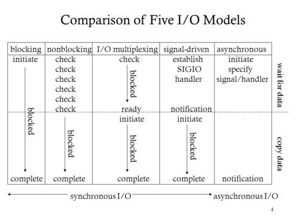

signal 信号
1.信号的处理方式？
信号（signal）– 进程之间通讯的方式，是一种软件中断。一个进程一旦接收到信号就会打断原来的程序执行流程来处理信号。
1 | singnal.signal(signalnum, handler)# |
2.进程与线程的区别?
进程独享进程空间 fork 全部复制一份，线程共享进程空间，栈上的东西独享
1.信号的处理方式？
信号（signal）– 进程之间通讯的方式，是一种软件中断。一个进程一旦接收到信号就会打断原来的程序执行流程来处理信号。
1 | singnal.signal(signalnum, handler)# |
2.进程与线程的区别?
进程独享进程空间 fork 全部复制一份，线程共享进程空间，栈上的东西独享
1 | int epoll_create(int size);//size fd数量,创建了红黑树和就绪链表 |
为什么使用红黑树
新添加 fd 时会查询是否已经存在 fd 的监听事件，如果没有则添加
所以插入和删除性能比较好，时间复杂度 log(N)
为什么比较快
因为只需要监听就绪链表中是否有数据即可(时间复杂度 O(1))，不需要复制全部的 fd 的用户态
LT 和 ET 区别
LT：水平触发，效率会低于 ET 触发，尤其在大并发，大流量的情况下。但是 LT 对代码编写要求比较低，不容易出现问题。LT 模式服务编写上的表现是：只要有数据没有被获取，内核就不断通知你，因此不用担心事件丢失的情况。
ET：边缘触发，效率非常高，在并发，大流量的情况下，会比 LT 少很多 epoll 的系统调用，因此效率高。但是对编程要求高，需要细致的处理每个请求，否则容易发生丢失事件的情况。
从本质上讲：与 LT 相比，ET 模型是通过减少系统调用来达到提高并行效率的。

1 | pip install supervisor |
1 | 1.配置路径 |
1 | 把配置文件中 inet_http_server 前面的分号去掉 在Supervisor中 ;是注释的格式 默认是不开启web界面的 |
1 | go get github.com/boltdb/bolt |
1 | db, err := bolt.Open("my.db", 0600, nil) |
其中open的第一个参数为路径,如果数据库不存在则会创建名为 my.db 的数据库， 第二个为文件操作，第三个参数是可选参数， 内部可以配置只读和超时时间等，
特别需要注意的地方就是因为 boltdb 是文件操作类型的数据库，所以只能单点写入和读取，如果多个同时操作的话后者会被挂起直到前者关闭操作为止， boltdb 一次只允许一个读写事务，但一次允许多个只读事务。所以数据具有较强的一致性。
因此单个事务和从它们创建的所有对象（例如桶、键）都不是线程安全的。与数据在多个概念你必须为每一个或使用锁机制来保证只有一个 goroutine 里操作改变数据。
只读事务和读写事物通常不应该在同一个 goroutine 里同时打开。由于读写事务需要周期性地重新映射数据文件，这可能导致死锁。
boltdb 的读写事务操作我们可以使用DB.Update()来完成形如：
1 | err := db.Update(func(tx *bolt.Tx) error { |
在闭包 fun 中,在结束时返回 nil 来提交事务。您还可以通过返回一个错误在任何点回滚事务。所有数据库操作都允许在读写事务中进行。
始终要关注 err 返回，因为它将报告导致您的事务不能完成的所有磁盘故障。
每一次新的事物都需要等待上一次事物的结束，这种开销我们可以通过DB.Batch()批处理来完成
1 | err := db.Batch(func(tx *bolt.Tx) error { |
在批处理过程中如果某个事务失败了,批处理会多次调用这个函数函数返回成功则成功。如果中途失败了，则整个事务会回滚。
只读事务可以使用DB.View()来完成
1 | err := db.View(func(tx *bolt.Tx) error { |
不改变数据的操作都可以通过只读事务来完成， 您只能检索桶、检索值，或在只读事务中复制数据库。
DB.Begin()启动函数包含在 db.update 和 db.batch 中,该函数启动事务开始执行事务并返回结果关闭事务，这是 boltdb 推荐的方式，有时候你可能需要手动启动事物你可以使用Tx.Begin()来开始，切记不要忘记关闭事务。
1 | // Start a writable transaction. |
桶是数据库中键/值对的集合。桶中的所有键必须是唯一的。您可以使用DB.CreateBucket()创建一个桶：
1 | db.Update(func(tx *bolt.Tx) error { |
你也可以是实用Tx.CreateBucketIfNotExists()来创建桶，该函数会先判断是否已经存在该桶不存在即创建， 删除桶可以使用Tx.DeleteBucket()来完成
存储键值对到桶里可以使用Bucket.Put()来完成：
1 | db.Update(func(tx *bolt.Tx) error { |
获取键值Bucket.Get()：
1 | db.View(func(tx *bolt.Tx) error { |
get()函数不返回一个错误，因为它的运行是保证工作（除非有某种系统故障）。如果键存在，那么它将返回它的值。如果它不存在，那么它将返回 nil。
还需要注意的是当事务打开都 get 返回的值时唯一有效的，如果你需要将该值用于其他事务，你可以通过copy拷贝到其他的 byte slice 中
利用nextsequence()功能，你可以让 boltdb 生成序列作为你键值对的唯一标识。见下面的示例。
1 | func (s *Store) CreateUser(u *User) error { |
boltdb 以桶中的字节排序顺序存储键。这使得在这些键上的顺序迭代非常快。要遍历键，我们将使用游标Cursor()：
1 | db.View(func(tx *bolt.Tx) error { |
游标Cursor()允许您移动到键列表中的特定点，并一次一个地通过操作键前进或后退。
光标上有以下函数：
1 | First() 移动到第一个健. |
这些函数中的每一个都返回一个包含(key []byte, value []byte)的签名。当你有光标迭代结束，next()将返回一个 nil。在调用 next()或 prev()之前，你必须寻求一个位置使用 first()，last()，或 seek()。如果您不寻求位置，则这些函数将返回一个 nil 键。
在迭代过程中，如果键为非零，但值为 0，则意味着键指向一个桶而不是一个值。用桶.bucket()访问子桶。
遍历一个 key 的前缀，你可以结合seek()和bytes.hasprefix()：
1 | db.View(func(tx *bolt.Tx) error { |
另一个常见的用例是扫描范围，例如时间范围。如果你使用一个合适的时间编码，如 rfc3339 然后可以查询特定日期范围的数据：
1 | db.View(func(tx *bolt.Tx) error { |
如果你知道所在桶中拥有键，你也可以使用ForEach()来迭代：
1 | db.View(func(tx *bolt.Tx) error { |
还可以在一个键中存储一个桶，以创建嵌套的桶：
1 | func (*Bucket) CreateBucket(key []byte) (*Bucket, error) |
boltdb 是一个单一的文件，所以很容易备份。你可以使用TX.writeto()函数写一致的数据库。如果从只读事务调用这个函数，它将执行热备份，而不会阻塞其他数据库的读写操作。
默认情况下，它将使用一个常规文件句柄，该句柄将利用操作系统的页面缓存。有关优化大于 RAM 数据集的信息，请参见Tx文档。
一个常见的用例是在 HTTP 上进行备份，这样您就可以使用像cURL这样的工具来进行数据库备份：
1 | func BackupHandleFunc(w http.ResponseWriter, req *http.Request) { |
然后您可以使用此命令进行备份：$ curl http://localhost/backup > my.db
或者你可以打开你的浏览器以http://localhost/backup，它会自动下载。
如果你想备份到另一个文件，你可以使用TX.copyfile()辅助功能。
数据库对运行的许多内部操作保持一个运行计数，这样您就可以更好地了解发生了什么。通过捕捉这些数据的快照，我们可以看到在这个时间范围内执行了哪些操作。
例如，我们可以开始一个 goroutine 里记录统计每 10 秒：
1 | go func() { |
有时创建一个共享的只读 boltdb 数据库是有用的。对此，设置 options.readonly 国旗打开数据库时。只读模式使用共享锁允许多个进程从数据库中读取，但它将阻塞任何以读写方式打开数据库的进程。
1 | db, err := bolt.Open("my.db", 0666, &bolt.Options{ReadOnly: true}) |
boltdb 能够运行在移动设备上利用的工具结合特征 GoMobile。创建一个结构体，包含您的数据库逻辑和参考一个 bolt.db 与初始化 contstructor 需要在文件路径，数据库文件将存储。使用这种方法，Android 和 iOS 都不需要额外的权限或清理。
1 | func NewBoltDB(filepath string) *BoltDB { |
数据库逻辑应定义为此包装器结构中的方法。
要从本机语言初始化此结构（两个平台现在都将本地存储与云同步）。这些片段禁用数据库文件的功能）：
Android
1 | String path; |
IOS
1 | - (void)demo { |
1.下载工具go get github.com/boltdb/boltd
然后编译 cmd 下的 main 文件生成可执行文件改名为 boltd
拷贝 boltd 到 *.db 同级目录，执行如下：boltd my.db
2.命令行工具
https://github.com/hasit/bolter
bolter -f my.db
boltdb 源码解析 TODO
简单来说：hash（散列、杂凑）函数，是将任意长度的数据映射到有限长度的域上。直观解释起来，就是对一串数据 m 进行杂糅，输出另一段固定长度的数据 h，作为这段数据的特征（指纹）。
由于用途的不同，hash 在数据结构中的含义【hashCode()】和密码学【md5,sha1,sha256】中的含义并不相同，所以在这两种不同的领域里，算法的设计侧重点也不同。
1 | string、int、bool、object hashCode() |
1 | | 算法 | bit 位数 | 16 进制字符串 | |
1 | fnv：FNV能快速hash大量数据并保持较小的冲突率，它的高度分散使它适用于hash一些非常相近的字符串，比如URL，hostname，文件名，text，IP地址等。 |
1 | package main |
1 | //使用middleware |
1 | //使用方式 |
1 | func (engine *Engine) ServeHTTP(w http.ResponseWriter, req *http.Request) { |
1 | package main |
1 | package main |
测试源码【goland 可以使用 cmd+shift+T 快键键生成测试用例】
1 | package main |
1 | // 基本测试 |
最常用命令
1 | go test -v -run=^TestStringBuilder$ |